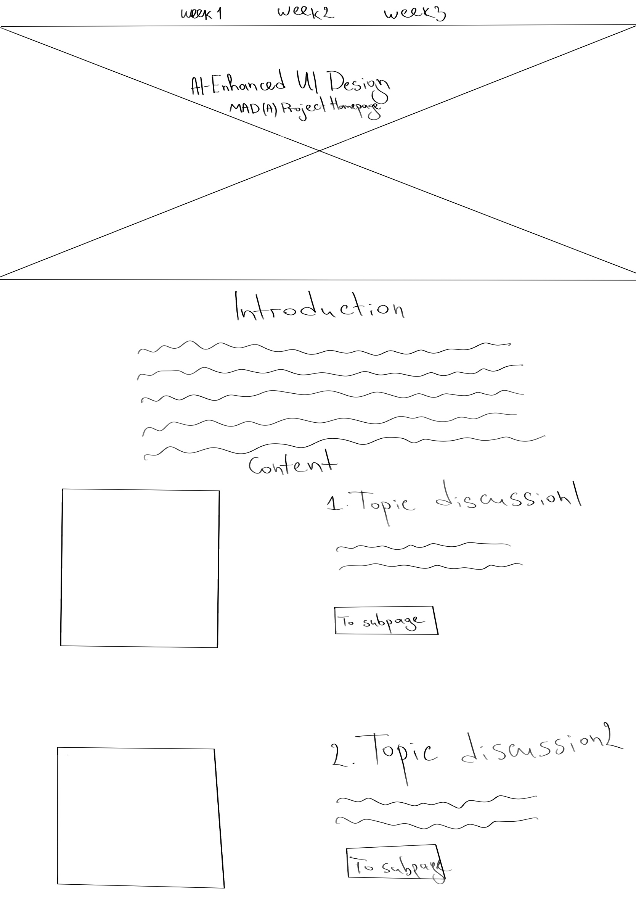

I have already identified the three main audience groups for my website, as discussed in the "week 2" page of this portfolio website. Now, I will try to briefly discuss what they have in common and how I am going to plan the conceptual structure of my website’s presentation:
Since the website is targeted towards individuals in the design industry, I have to be careful with every step taken towards the final design. First and foremost I am taking into account Don Norman’s Fundamental Principles of Interaction. The user experience of the website similarly to any other product should be easy to use. When you look at it something has to suggest what the possible interactions between the user and the product can be. This part is called affordance when it is perceivable. When that is the case they are signifiers. My aim is to deliver a website that is not complex but rather simplified with the necessary signifiers placed where they belong identifying the possible interaction between the user and the website.
Keeping in mind all that, I first had to create an initial blueprint for my website. Wireframing helped a lot because with its help I was able to get an idea whether I was on the right track with my design thinking process or not. After a couple of possible variations of the layout, I finally came up with one that perfectly corresponds with my views and my users’ needs. Here it is:
